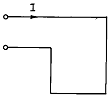
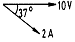
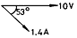
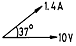
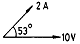
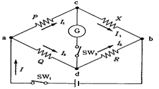
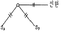
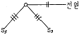
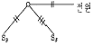
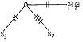

전기기능사 (2004-02-01 기출문제)
1과목: 전기 이론
1. 동일한 용량의 콘덴서 5개를 병렬로 접속하였을 때의 합성용량과 5개를 직렬로 접속하였을 때의 합성용량은 다르다. 병렬로 접속한 것은 직렬로 접속한 것의 몇 배에 해당하는가?
- 5배
- 10배
- 15배
- 25배
(정답률: 73%)

2. 진공중의 투자율 μo[H/m]는 얼마인가?
- 8.855 x 10-12
- 9 x 109
- 6.33 x 104
- 4π x 10-7
(정답률: 49%)
3. 자극의 세기가 10-5[Wb], 길이 10[㎝]인 막대자석의 자기 모우먼트는 얼마인가?
- 10-4 [Wb· m]
- 10-5 [Wb· m]
- 10-6 [Wb· m]
- 10-7 [Wb· m]
(정답률: 45%)
4. 0.5[A]의 전류가 흐르는 코일에 저축된 전자 에너지를 0.2[Ｊ]이하로 하기 위한 인덕턴스[H]는?
- 2.2
- 1.6
- 1.2
- 0.8
(정답률: 43%)
5. L=40[mH]의 코일에 흐르는 전류가 0.2초 동안에 10[A]가 변화했다. 코일에 유기되는 기전력[V]은?
- 1
- 2
- 3
- 4
(정답률: 65%)
6. 그림과 같이 직사각형의 코일에 큰 전류를 흐르게 하면 코일의 모양은 어떻게 변하겠는가?

- 직사각형
- 정사각형
- 삼각형
- 원형
(정답률: 52%)
7. 다음 중 자기회로에서 사용되는 단위가 아닌 것은?
- AT／wb
- wb
- AT
- kW
(정답률: 75%)
8. R - L - C 직렬회로에서 직렬 공진인 경우 전압과 전류의 위상관계는 어떻게 되는가?
- 전류가 전압보다 π/2[㎭] 앞선다.
- 전류가 전압보다 π/2[㎭] 뒤진다.
- 전류가 전압보다 π [㎭] 앞선다.
- 전류와 전압은 동상이다.
(정답률: 44%)
9. 대칭 3상 교류의 성형 결선에서 선간 전압이 220[V]일 때 상전압은 얼마인가?
- 192[V]
- 172[V]
- 127[V]
- 117[V]
(정답률: 64%)
10. 히스테리시스 곡선이 횡축과 만나는 점의 값은 무엇을 나타내는가?
- 자속밀도
- 자화력
- 보자력
- 잔류자기
(정답률: 70%)
11. 납축전지의 전해액은?
- 이산화납
- 묽은 황산
- 수산화칼륨
- 염화나트륨
(정답률: 73%)
12. 전류와 자기장의 자력선 방향을 쉽게 아는 것은?
- 앙페르의 오른나사의 법칙
- 렌쯔의 법칙
- 비오-사바르의 법칙
- 전자유도 법칙
(정답률: 71%)
13. 저항 4[Ω ],유도리액턴스 3[Ω ]의 직렬회로에 10[V]의 교류를 가할 때 전류의 벡터도는?




(정답률: 38%)
14. 200[V], 500[W]의 전열기를 220[V]전원에 사용하였다면 이때의 전력은 얼마인가?
- 400[W]
- 500[W]
- 550[W]
- 6⑤[W]
(정답률: 44%)
15. 어떤 사인파 교류전압의 평균값이 191V이면 최대값은?
- 150
- 250
- 300
- 400
(정답률: 54%)
16. 교류회로에서 유효전력을 (P), 무효전력을 (Pr), 피상전력을 (Pa)이라 하면 역률을 구하는 식은?
- cos θ = P／Pa
- cos θ = Pa／P
- cos θ = P／Pr
- cos θ = Pr／P
(정답률: 52%)
17. 그림의 브리지 회로에서 평형 조건식이 올바른 것은?

- PX = QX
- PQ = RX
- PX = QR
- PR = QX
(정답률: 67%)
18. 다음은 서어미스터의 설명이다. 틀린 것은?
- 온도 변화에 따라 저항값이 변하는 열민감성 저항 소자이다.
- 니켈, 코발트, 망간, 구리, 철 등의 산화물을 2∼3종류 혼합한 것을 구워서 만든다.
- 서어미스터는 온도가 증가할 때 저항값이 증가된다.
- 저항 온도 변화의 보상, 온도의 자동제어, 온도계, 전력계, 시간 지연기 등에 사용된다.
(정답률: 53%)
19. 전주의 길이가 15[m]를 넘는 경우, 전주가 땅에 묻히는 깊이는 최소 얼마나 묻어야 하는가?(단, 700kg 이하 이다)
- 2.5m 이상
- 3.5m 이상
- 4.5m 이상
- 5.5m 이상
(정답률: 67%)
20. 건조한 곳의 노출 및 은폐 배선용에 사용되는 플렉시블 외장 케이블의 형식은? (단, 심선에 고무 절연선을 사용한 것)
- ACL
- ACV
- ACT
- AC
(정답률: 27%)
2과목: 전기 기기
21. 공칭 단면적 8[㎟]되는 연선의 구성은 지름이 1.2[㎟]일 때 소선수는 몇 가닥으로 되어 있는가?
- 3
- 4
- 6
- 7
(정답률: 37%)
22. 다음의 검사방법 중 옳은 것은?
- 어어스 테스터로서 절연저항을 측정한다.
- 검전기로서 전압을 측정한다.
- 메가로서 회로의 저항을 측정한다.
- 코올라시 브릿지로 접지저항을 측정한다.
(정답률: 46%)
23. 절연전선 중 옥외용 비닐 절연전선을 무슨 전선이라고 호칭하는가?
- RB선
- IV선
- OW선
- DV선
(정답률: 77%)
24. 케이블을 고층 건물에 수직으로 배선하는 경우에는 다음 중 어떤 방법으로 지지하는 것이 가장 적당한가?
- 3층마다
- 2층마다
- 매층마다
- 4층마다
(정답률: 58%)
25. 금속관을 구부릴 때 금속관의 단면이 심하게 변형되지 아니하도록 구부려야 하며, 그 안쪽의 반지름은 관 안지름의 몇배 이상이 되어야 하는가?
- 6
- 8
- 10
- 12
(정답률: 72%)
26. 한개의 전등을 2개소에서 점멸하는 경우 맞는 배선은?




(정답률: 63%)
27. 전선의 소요량 계산에서 선로의 고저가 심할때 산출하는 식은?
- (선로길이×전선조수)×0.02
- (선로길이×전선조수)×1.03
- (선로길이×전선조수)×2.03
- (선로길이×전선조수)×3.56
(정답률: 50%)
28. 전선접속 방법이 잘못된 것은?
- 트위스트 접속은 2.6[㎜]이하의 가는 단선을 직접 접속할 때 적합하다.
- 브리타니어 접속은 2.6[㎜]이상의 굵은 단선의 접속에 적합하다.
- 쥐꼬리 접속은 박스내에서 가는전선을 접속할 때 적합하다.
- 와이어 커넥터 접속은 납땜과 테이프가 필요없이 접속할 수 있고 누전의 염려가 없다.
(정답률: 52%)
29. 정격전류가 20[A]인 380[V] 3상유도전동기에 공급하는 간선의 굵기는 몇[A] 이상이 되어야 하는가?
- 22
- 25
- 30
- 40
(정답률: 40%)
30. 콘크리트에 매입하는 금속관 공사에서 직각으로 배관할 때 사용하는 것은?
- 노멀 밴드
- 뚜껑이 있는 엘보
- 서비스 엘보
- 유니버설 엘보
(정답률: 38%)
31. 비접지식 고압 전로에 접속하는 기계 기구의 철대, 금속제 외함의 접지 공사시 건물의 철골이 몇[Ω ] 이하면 접지극으로 사용할 수 있는가?
- 2
- 3
- 4
- 5
(정답률: 27%)
32. 가요 전선관과 금속관을 연결하는데 사용하는 것은?
- 플렉시블 커플링
- 앵글박스 커넥터
- 스트렛박스 커넥터
- 컴비네이션 커플링
(정답률: 68%)
33. 전기 기기에 설치하는 접지공사로서 바른 것은?
- 피뢰기 접지는 제3종
- 저압 전동기 철대는 제1종
- 고압 회로의 유입 차단기 외함은 제3종
- 변압기 2차 전압의 중성점, 또는 그 1단자는 제2종
(정답률: 46%)
34. 전선의 굵기를 측정하는데 쓰이는 공구는?
- 파이어 포트
- 스패너
- 와이어 게이지
- 프레셔 툴
(정답률: 80%)
35. 저압 연접 인입선의 시설 규정으로 적합한 것은?
- 인입선에서 분기하는 점으로부터 100[m]를 넘는 지역일 것
- 2.0[mm] 이하의 경동선을 사용할 것
- 폭 5[m]를 넘는 도로는 횡단할 것
- 옥내를 통과하지 말 것
(정답률: 44%)
36. 배선용 차단기의 원리는 어느 것인가?
- 열동형
- 압력형
- 부르동관형
- 정전력용
(정답률: 39%)
37. 진동이나 온도 변화가 있는 기계기구의 단자를 전선에 접속할 때 사용하는 것은?
- 커넥터
- 슬리브
- 더블 너트
- 압착단자
(정답률: 31%)
38. 옥내배선의 접속함이나 박스 내에서 접속할 때 주로 사용하는 접속법은?
- 슬리브 접속
- 쥐꼬리 접속
- 트위스트 접속
- 브리타니아 접속
(정답률: 72%)
39. 합성수지관 1본의 길이는 몇 [m]인가?
- 3.0
- 3.6
- 4.0
- 5.0
(정답률: 49%)
40. 절연 전선으로 가선된 배전 선로에서 활선 상태인 전선에 피복을 벗기는 공구는?
- 전선 피박기
- 애자커버
- 와이어 통
- 데드엔드 커버
(정답률: 75%)
3과목: 전기 설비
41. 다음 중 동력용 저압 인입선 공사시 건물 벽면에 시설할 때 사용하는 애자는?
- 핀애자
- 노브애자
- 평형애자
- 다구애자
(정답률: 23%)
42. 2종 금속 몰드의 구성품 중 조인트 금속 유형의 종류와 거리가 먼 것은?
- L형
- T형
- D형
- 크로스형
(정답률: 46%)
43. 복수기에 냉각수를 보내주는 펌프는?
- 순환펌프
- 급수펌프
- 복수펌프
- 배출펌프
(정답률: 38%)
44. 수용설비용량이 2.2kW인 주택에서 최대사용전력이 0.8kW이었다면 수용률은 몇 % 가 되겠는가?
- 26.5
- 36.4
- 46.8
- 56.2
(정답률: 49%)
45. 배전변전소에서 진상용콘덴서를 설치하는 주된 목적은?
- 변압기 보호
- 선로 보호
- 역률 개선
- 코로나 방지
(정답률: 52%)
46. 송전선로에서 매설지선의 설치 목적으로 가장 타당한 것은?
- 절연 증가
- 기계적 강도 증가
- 코로나 전압 저감
- 피뢰작용을 높임
(정답률: 35%)
47. 3kV 배전선로의 전압을 6kV로 승압하여 동일한 손실률로 송전할 때 송전전력은 승압전의 몇 배가 되는가?
- √3 배
- 2배
- 3배
- 4배
(정답률: 20%)
48. 미분탄연소 및 중유연소장치에서 공기 과잉률은 약 얼마 정도로 하는가?
- 1.01∼1.07
- 1.22∼1.28
- 1.45∼1.55
- 1.66∼1.72
(정답률: 50%)
49. 절연유의 절연파괴전압을 측정할 때 구상 전극 상호간의 거리는 일반적으로 몇 mm 로 하는가? (단, 구상 전극의 지름은 12.5mm라고 한다.)
- 2.5
- 5
- 10
- 12.5
(정답률: 41%)
50. 전선 표면의 공기절연이 국부적으로 파괴되어 빛과 낮은 소리를 내는 현상은?
- 코로나현상
- 공동현상
- 페란티현상
- 플라즈마현상
(정답률: 53%)
51. 배압터빈에 필요가 없는 것은?
- 복수기
- 조속기
- 절탄기
- 안전판
(정답률: 23%)
52. 기력발전소에서 에너지 손실이 가장 많은 것은?
- 보일러 배기 손실
- 발전기 손실
- 복수기 냉각수 손실
- 소내 동력
(정답률: 40%)
53. 조속기의 부속장치인 평속기(회전진자)가 하는 역할은?
- 노즐 또는 안내날개를 여닫는 역할
- 서보모터를 움직이는 역할
- 수차 속도의 기준값으로부터 편차를 검출
- 서보모터의 압유 공급
(정답률: 38%)
54. 수압변동을 생기게 하는 에너지를 흡수하며, 탱크를 소형으로 하기 위하여 상승관을 설치한 조압수조는?
- 단동 조압수조
- 수실 조압수조
- 차동 조압수조
- 제수 구멍 조압수조
(정답률: 43%)
55. 유효낙차 50m, 이론최대출력 4900kW인 수력발전소의 최대사용유량은 매초 몇 m3 인가?
- 10
- 50
- 100
- 150
(정답률: 15%)
56. 대기압하에서 0℃의 물 1kg을 가열하여 100℃의 완전한 건조 포화증기가 되면 이 건조 포화증기 1kg 이 가지고 있는 열량은 몇 kcal 인가?
- 100
- 539
- 639
- 1000
(정답률: 37%)
57. 교류 송전방식의 장점이 아닌 것은?
- 전압의 변환이 용이하여서 전력 전송을 합리적이고, 경제적으로 운영할 수 있다.
- 교류 발전기는 직류 발전기보다 구조가 간단하고, 효율이 좋으며, 3상 방식에서 회전 자기장을 쉽게 얻을 수 있다.
- 무효전력이 나타나지 않으므로 전력 손실이나 전압변동이 적다.
- 교류 전류의 차단이 비교적 용이하다.
(정답률: 44%)
58. 한 부하점에 대해서 좌우 두 간선으로부터 전력이 공급되는 방식으로 간선의 일부에 고장이 생긴 경우에 그 고장구간을 분리하여도 다른 구간에의 배전을 계속할 수 있는 배전방식은?
- 네트워크식
- 뱅킹 방식
- 환상식
- 가지식
(정답률: 32%)
59. 송전선로의 중성점을 접지하는 목적은?
- 전선의 절약
- 송전용량의 증가
- 전압강하의 감소
- 이상전압의 방지
(정답률: 54%)
60. 변전소의 주체는 어떤 설비인가?
- 변압기
- 조상설비
- 개폐장치
- 피뢰장치
(정답률: 56%)